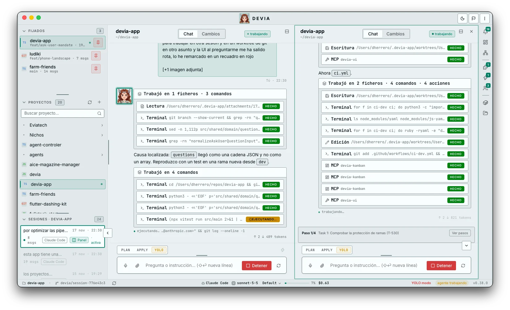
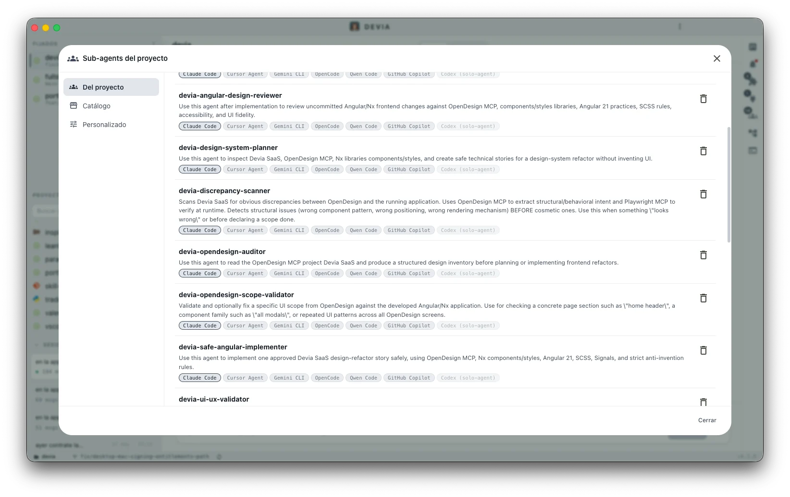

Devia Desktop documentation
What is Devia Desktop?
Devia Desktop is a desktop app for building software with AI agents. It is a unified interface over several agentic CLIs (Claude Code, Codex, Gemini CLI, and more) that turns working with terminal agents into a visual, organized, multi-project experience.
It is open source (Apache-2.0): free and with every feature, available for Windows, macOS, and Linux. Everything runs locally, on your projects and your CLIs; it needs no account and no connection to any Devia service.
Installation
Windows
- Download the
.exeinstaller from the downloads page. - Run it and choose the install directory (per-user install, no administrator rights needed).
- If SmartScreen shows a warning, click “More info → Run anyway”.
macOS
- Download the
.dmgfor your architecture (Apple Silicon or Intel). - Open it and drag Devia to the Applications folder.
- The app is signed and notarized by Apple: it opens with no extra steps.
Linux
- AppImage: download it, make it executable with
chmod +x Devia-*.AppImage, and run it. - Debian/Ubuntu: install the package with
sudo dpkg -i devia_*_amd64.deb.
Getting started
- Pick your workspace. The first time you open Devia, a modal asks for the root folder where your projects live (for example
~/repos). Devia lists the projects inside it and detects their stack. - Connect an agent. Devia detects the agentic CLIs installed on your machine and lets you choose the active agent in Settings. Each project is configured so the agent works with no manual setup.
- Chat. Open a project and type your first instruction in the composer. Choose the run mode: plan (plans only), apply (applies with permissions), or apply-yolo (no confirmations), depending on how much autonomy you want to give.
- Review. Each response streams in with markdown, tool calls unfold into cards, and the agent’s changes appear as inline diffs.
Supported agents
Devia drives the following coding CLIs, and you can switch between them without leaving the app. The level of integration varies by agent:
| Agent | Integration |
|---|---|
| Claude Code | The most complete: per-run MCP servers, sub-agent cards in the chat, and automatic resume after a usage limit. |
| OpenCode | Dedicated integration. |
| Pi | Dedicated integration. |
| Kimi and Hermes | Through the Agent Client Protocol (ACP). The Kimi profile is not yet verified against the real CLI. |
| Codex, Gemini CLI, Cursor Agent, GitHub Copilot CLI, Grok, Qwen, Qoder, and DeepSeek | Generic integration over each CLI’s stream. |
| Your own agent | Any CLI that speaks ACP can be defined in agent-defs.json. |
When you continue a session with a different agent than the one that started it, Devia performs a context handoff: it injects a summary of the work (goal, files touched, and the latest exchanges) into the new agent’s first turn and leaves a divider in the chat. The AI-generated summary requires Claude and ANTHROPIC_API_KEY.
What Devia can do
Agents and execution
- plan, apply, and apply-yolo modes saved per session. How they are enforced depends on the agent: in Codex, for example, plan mode relies on the prompt’s instructions.
- Import existing sessions from Claude Code, Codex, and Grok and continue them in Devia.
- With Claude Code, Devia resumes the session on its own after a usage limit, as long as the app stays open.
- Context used, cost, tokens, and compactions for each session, computed locally.
- Per-project instruction queue: queue prompts while the agent works, reorder them with drag and drop, pause and resume.
- Claude Code sub-agent calls appear nested in the chat.

Multi-project and split view
- List, create (empty or from a template), and clone projects; favorites pinned in the sidebar.
- Per-project session history that survives restarts.
- Up to 4 panes (2×2) in the same window, each with its own session and its own agent working in parallel.
- Each additional pane works isolated in its own git worktree, so two agents never touch the same files.

Context and memory
- Persistent memory across sessions (
devia-memory), personal and per project, with optional semantic re-ranking. The agent queries and feeds it; you manage it in Settings. - A code graph of its own (6 languages) that agents query over MCP, with a
/graphview to explore it. - Code mode: the agent writes a TypeScript script that runs in a sandbox over the MCP servers you choose and returns only the result. In this version scripts can only read.


Method and planning
- Per-project kanban with specs, tasks, and dependencies that the agent reads and updates over MCP (
devia-kanban). The state lives outside the repository. - Devia Method: a development method of its own (skills and a bootstrap prompt) that Devia delivers to every agent, switchable per project.
- Interactive cards for any agent: questions, plan approval, change review, confirmations, and selection. Desktop only.
- A manager for skills, local or from GitHub, and for reusable sub-agents that Devia syncs with each CLI.



Git and review
- Live repository status, inline diff viewer, branch switcher, and fast-forward-only pull.
- Per-line comments on the diff that are sent to the agent as a review request.
- Snapshots with restore of your MCP, skills, and sub-agents configuration before it is modified.
- Commits, pushes, and pull requests are made by the agent with its own tools: Devia does not create them itself.
MCP servers
- Model Context Protocol server manager with a starter catalog: install, enable, and test servers. Devia writes the configuration in the native format of 9 agents.
- Each server can be offered to the agent directly or through code mode.
Remote control over Telegram
- Start runs, switch mode or agent, check status (branch, context used, cost), and chat with the agent from Telegram.
- Send attachments to the agent and receive the files it generates. Optional mirror of the desktop conversation.
- It only works while Devia is open and serves a single authorized chat. Interactive cards are not shown on Telegram: the agent asks in plain text.

Terminal, voice, and more
- Integrated per-project terminal with a real PTY, and opening the project in 10 IDEs.
- Docker Compose orchestration: deploy, down, and logs per project.
- Attachments of any type (up to 50 MB per file) and an archive of the files the agent generates.
- Local voice dictation; today in Spanish only.
- Audit log of every tool call.
- Automatic updates of installed builds (on Linux, AppImage only).
Capabilities and limits
An honest summary of what Devia does today and what it does not do yet, so you know what to expect.
What it does
- Drive 13 agentic CLIs from one window, with plan, apply, and apply-yolo modes.
- Split view of up to 4 panes with isolated git worktrees.
- Kanban, memory, code graph, and code mode available to the agent over MCP.
- MCP, skills, and sub-agents managers.
- Interactive cards to ask questions, approve plans, and review changes.
- Per-line review comments sent to the agent.
- Remote control over Telegram, with file delivery.
- Terminal, Docker Compose, and opening in IDEs.
What it does in part
- Session import: only from Claude Code, Codex, and Grok.
- Resume after a usage limit: Claude Code only, and only while the app stays open.
- Sub-agent cards in the chat: Claude Code only.
- Re-injecting memory when the agent compacts its context: Claude and Pi only.
- Your own agents: only those that speak ACP.
- Voice dictation: Spanish only, and how it behaves in the packaged build is still to be verified.
- Interface in 11 languages: Spanish and English are complete; the rest may show untranslated text.
- Telegram: only while Devia is open, with a single authorized chat, and without interactive cards.
What it does not do yet
- Creating commits, pushing, or opening pull requests from the interface.
- Using GitHub, GitLab, Linear, or Jira as a task source.
- A built-in file editor: the project tree is read-only and files open in your IDE.
- A coordinator that launches and supervises several worker agents. Today parallelism is the split view, driven by you.
- Scheduled or event-triggered automations.
- Running on remote servers over SSH, in the cloud, or headless.
- A native mobile app: the phone is used through Telegram.
- A plugin system for third-party panels or themes.
- Computer control, mobile emulators, or an embedded browser.
Configuration and data
Almost all of Devia’s data lives on your disk, under ~/.devia-app/ (on Windows, C:\Users\<your-user>\.devia-app\):
| Path | Contents |
|---|---|
devia-app.config.json | Settings: workspace, active agent, language… (secrets such as the Telegram token are stored encrypted) |
sessions/<project>/ | Chat history per project |
projects/<key>/ | Per-project data: kanban board (kanban.json) and memory (memory.json) |
memory-global.json | Personal memory |
mcp-servers.json | Configured MCP servers |
snapshots/ | Snapshots of the configuration before it is modified |
worktrees/ | Git worktrees of the extra split-view panes |
attachments/ | Files attached in the composer or over Telegram |
outbox-archive/ | Files generated by the agent |
To back up your Devia, just copy that folder. Deleting it returns the app to its initial state. The audit log of tool calls is kept separately, in the application’s user data folder.
Updates
Published versions are announced in this site’s public manifest: updates/latest.json. It contains the latest available version, the release date, the notes, and per-platform download links.
Installed copies of Devia Desktop update themselves from the repository’s Releases (on Linux, AppImage only). You can also check the latest version by hand or from your scripts:
curl -s https://dherrero.github.io/devia/updates/latest.json | jq .versionFrequently asked questions
Is Devia free?
Yes. Devia Desktop is open source (Apache-2.0), with every feature, on all platforms.
Do I need an account or a connection to any Devia service?
No. Devia Desktop works locally. The only external services used are those of the agent CLIs you have configured yourself.
Does Devia include the AI agents?
No: Devia is the interface that drives them. You need at least one agentic CLI installed (Claude Code, Codex, Gemini CLI, OpenCode…) with its credentials. Devia detects them and handles the rest.
Does my data leave my machine?
Sessions, memory, kanban, and settings live in ~/.devia-app/. Voice dictation also runs locally. The only thing that travels is what the agent CLI you use sends to its own provider.
Which languages is it available in?
This site is in Spanish, English, Valencian, French, German, Italian, Portuguese, Russian, Chinese, Hindi, and Arabic. The app has the same 11 languages, but only Spanish and English are complete: in the others, untranslated text may appear.
Can I control it from my phone?
Yes, through Telegram, as long as Devia is open on your computer. There is no native mobile app.
How do I report a problem?
Open an issue in the Devia GitHub repository with the steps to reproduce it and your platform (Windows/macOS/Linux).